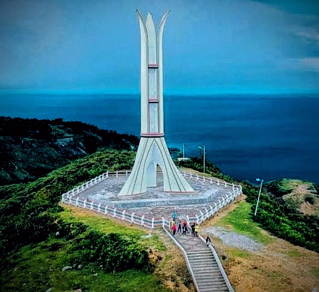
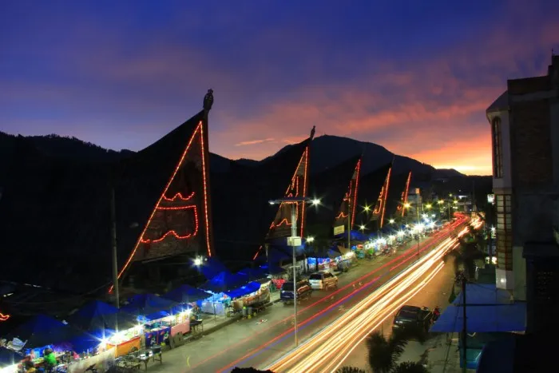
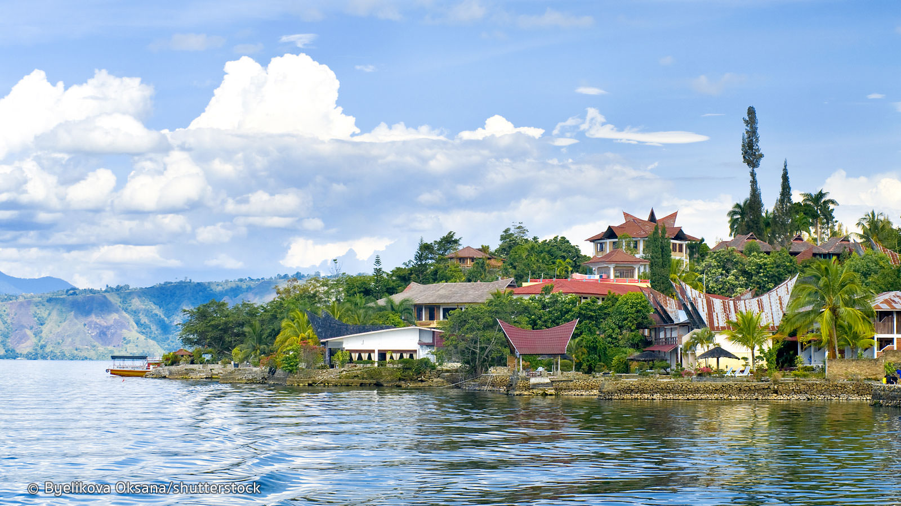
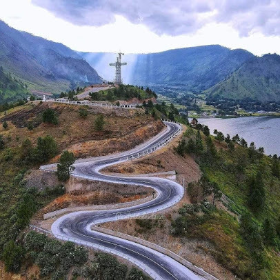
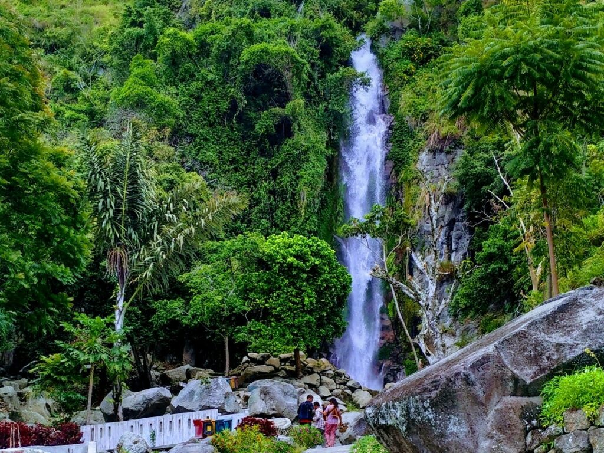
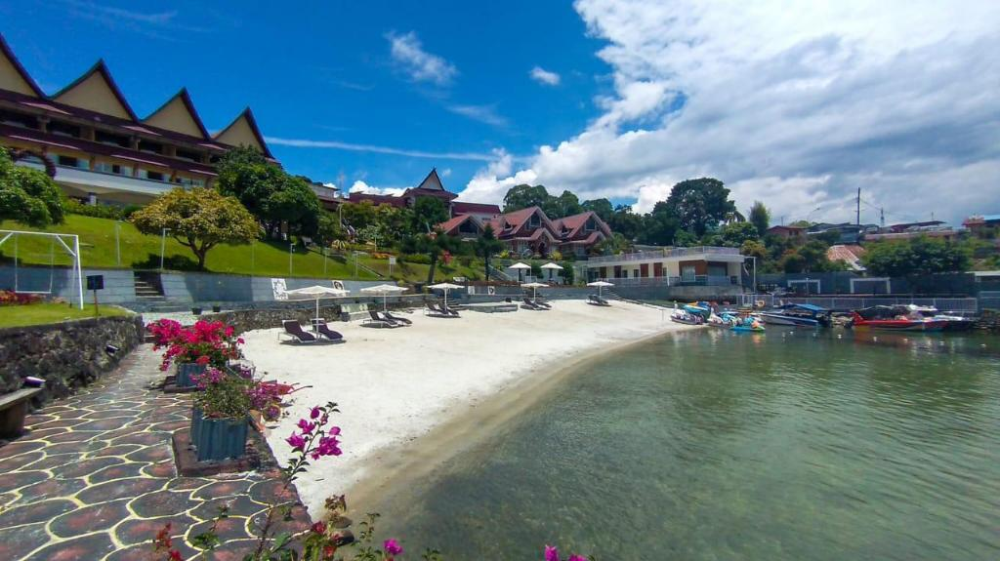

Come and Enjoy the View of Lake Toba
Wonderful Indonesia

Muara sebagai kota tua di Kabupaten Tapanuli Utara, yang terletak dipinggir Danau Toba, berpotensi besar dikembangkan menjadi destinasi wisata murah meriah.
MUARA

Kecamatan Balige yang berbatasan dengan Danau Toba memiliki potensi sebagai destinasi objek wisata alam, seperti Pantai Lumban Bulbul.
BALIGE

Menjelajahi keindahan wisata alam di kawasan Danau Toba ataupun mengenal lebih dekat kebudayaan Batak di Sumatera Utara.
SAMOSIR

Daya tarik utamanya adalah akan ada sebuah patung Yesus Kristus setinggi 61 meter di puncak Bukit Sibea-bea.
SIBEA BEA

Lembah Bakkara adalah sebuah lembah sekaligus salah satu destinasi wisata yang ada di kawasan Danau Toba tepatnya di kecamatan Baktiraja, kabupaten Humbang Hasundutan.
BAKKARA

Parapat adalah sebuah kota kecil di provinsi Sumatera Utara di tepi Danau Toba, di Semenanjung Uluan di mana ia membentuk jalur timur tersempit ke Pulau Samosir